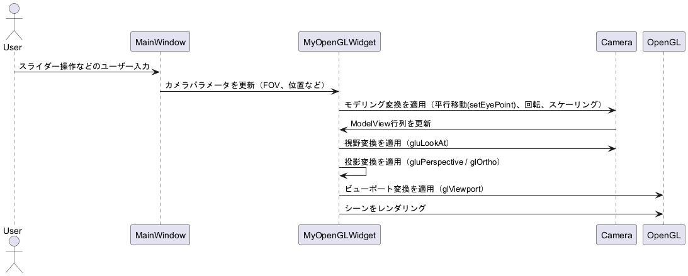
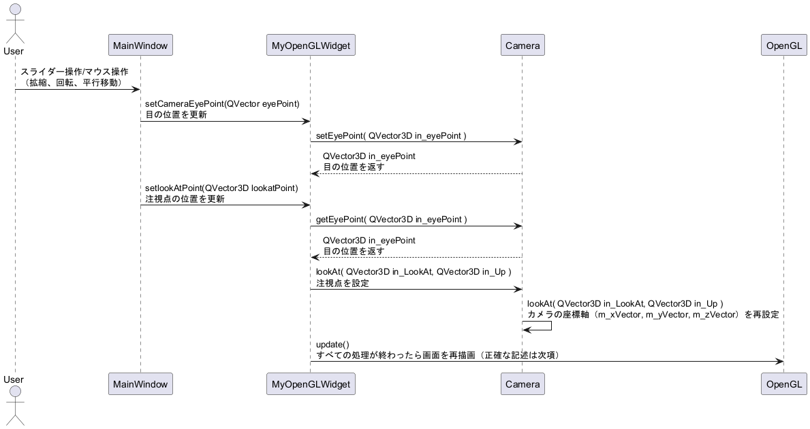
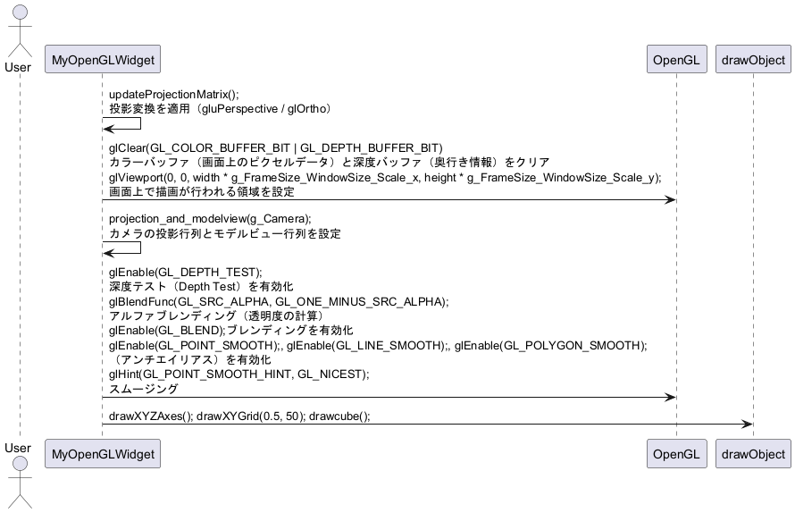
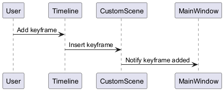

読み取り中…
検索中…
一致する文字列を見つけられません
シーケンス図一覧
プロジェクト内のシーケンス図をまとめたグループ
リンク
openGLのmyopenglwiget.cppの座標変換に関しては こちら を参照してください。
openGLの基本についてはこちらを参照してください。
レイトレのディレクトリの基本構成はこちらを参照してください。
filmのレイトレース結果等の出力画像を画面に表示する機構の整理はこちら
レイトレ簡易実装のせいりはこちら
film周りのプログレッシブレンダリングに関してはこちら
キーフレームカメラの処理については MainWindow::on_keyframeCameraButton_clicked を参照。
全体ざっくり
こんな感じのソフト

カメラ位置変更後の情報取得フロー
挙動～
QOpenGLWidgetなどのクラスでupdate()を呼び出すと、内部的にOpenGLの再描画メソッド（通常paintGL()）が実行されるため、このような記述になっている。 ここまででカメラの位置情報をどうやって習得するかを記述した。次のセクションでこれらの情報を下にワールド座標系→ビューポート表示までの挙動を記述する。

視野変換→ビューポート変換までのフロー
update()関数によってpaintGL()が自動で呼び出されたあとのpaintGL()の挙動
基礎情報ページに変換周りの挙動を記述。 MyOpenGLWidget::projection_and_modelview MyOpenGLWidget::updateProjectionMatrix() を参照。

projection_and_modelview
キーフレームの追加

視野角（FOV）の変更
FOVを変更するスロット ユーザーがスライダーを操作してカメラの視野角を変更します。
シーケンス図:

構築: